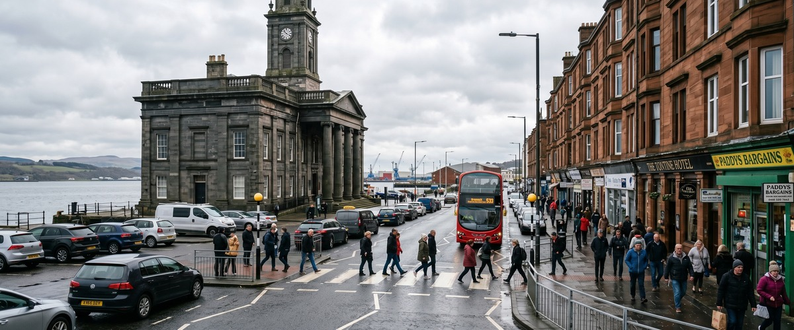
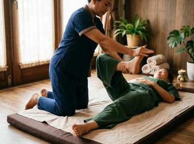
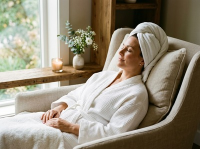

Greenock Custom House sits at the heart of one of the most recognisable stretches of waterfront in Inverclyde.

The quayside area draws office workers from the converted Custom House suites, visitors to the Beacon Arts Centre, and retail staff from the nearby waterfront shops. If you are looking for thai massage near Greenock Custom House, Thai Massage Greenock is just a short walk away on South Street, making it one of the most convenient options in the area.
The Custom House Quay area has seen significant regeneration in recent years. Businesses now operate from the beautifully restored 1818 Custom House building itself, and the Beacon Arts Centre brings a steady stream of visitors and creatives to the waterfront. People working and spending time in this part of Greenock are well placed to make use of a professional massage session without travelling far.

Thai Massage Greenock on South Street is only a few minutes' walk from Custom House Quay. Whether you work in the office suites along the waterfront, are visiting the arts centre, or simply live nearby, fitting a session into your day is straightforward. You can book your appointment online in advance or get in touch to check same-day availability.
Thai Massage Greenock offers a full range of therapeutic treatments, each delivered personally by Jariya Malone, a certified therapist trained at Bangkok's world-famous Wat Po temple. Whether you carry tension from long hours at a desk, need recovery support after physical activity, or simply want genuine rest, there is a treatment to suit you.
From Custom House Quay, the studio at 0/2 16 South Street is a short walk through the town centre. Head inland from the quayside along Nicolson Street, continue through the town centre, and South Street is close to the main shopping area. The walk takes around ten minutes at a comfortable pace.
Greenock Central railway station is approximately 400 metres from Custom House Quay, a six-minute walk. From the station, South Street is a further short walk, making the total journey from the quayside simple on foot. Bus services on routes 533, 901, and 906 stop at Terrace Road, just four minutes from the quay, and connect directly through the town centre.
If you are driving, South Street is easy to reach from the waterfront via the town centre road network, with parking available in the surrounding area. Ready to plan your visit? Secure your session online and arrive knowing your appointment is confirmed.
Jariya Malone trained at Wat Po in Bangkok, the birthplace of traditional Thai massage and one of the most respected massage schools in the world. Every treatment at Thai Massage Greenock is delivered personally by Jariya, with detailed notes kept from session to session so that each visit builds on the last.

This is not a chain or a franchise. It is a therapist-led practice where your specific needs drive every session. Whether you are managing chronic muscle tension, recovering from a sports injury, or dealing with the cumulative effects of stress and poor sleep, treatments are tailored to what your body actually needs that day.
The Custom House building was completed in 1818 and served as a hub for trade and customs administration throughout Greenock's period as a major shipping port. Greenock itself is the administrative centre of Inverclyde and sits at the heart of the west central Lowlands, forming part of a continuous urban area with Gourock and Port Glasgow. You can read more about the town's history at Greenock on Wikipedia.
Thai Massage Greenock is located at 0/2 16 South Street, which is approximately a ten-minute walk from Custom House Quay. The route takes you through the town centre, past the main shopping area, making it an easy journey on foot. If you prefer, Greenock Central station is just six minutes' walk from the quay, and the studio is a short walk from the station from there.
Walking is the simplest option: it takes around ten minutes from the quayside through the town centre to South Street. Greenock Central station is about 400 metres from Custom House Quay and sits close to the studio on South Street. Bus routes 533, 901, and 906 stop at Terrace Road, four minutes from the quay, and run through the town centre.
Same-day availability is often possible depending on the schedule. The quickest way to check is to call Thai Massage Greenock on 01475 600868. Alternatively, you can use the online booking form to see what times are open. Booking ahead is always recommended to secure your preferred slot.
For office workers and desk-based professionals, Traditional Thai Massage is an excellent starting point. It uses acupressure and assisted stretching along sen energy lines to release the neck, shoulder, and upper back tension that builds up from long periods of sitting. Thai Oil Massage is another strong option, combining flowing strokes with targeted pressure to ease postural strain and help the body reset after a working day.
Opening hours can vary, so it is worth checking directly with the studio to confirm current availability. You can call on 01475 600868 or visit the website to see up-to-date times and book your session. Evening and weekend appointments may be available, making it practical to schedule a treatment around a busy work schedule near Custom House.